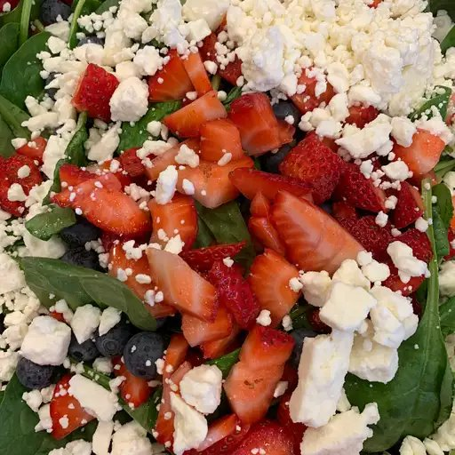

Strawberry Spinash Salad
This strawberry spinach salad is a great way to get kids to eat spinach!
Someone brought this salad to a potluck dinner, and I had to have the
recipe. Since then, I've made it many times and I've been asked for the
recipe every time I take it somewhere.

Ingredients
Dressing:
- ½ cup white sugar
- ½ cup olive oil
- ¼ cup distilled white vinegar
- 2 tablespoons sesame seeds
- 1 tablespoon poppy seeds
- 1 tablespoon minced onion
- ¼ teaspoon paprika
- ¼ teaspoon Worcestershire sauce
Salad:
- 1 quart strawberries - cleaned, hulled and sliced
-
10 ounces fresh spinach - rinsed, dried and torn into bite-size
pieces
- ¼ cup almonds, blanched and slivered
Directions
-
Make dressing: Whisk together sugar, oil, vinegar, sesame seeds,
poppy seeds, onion, paprika, and Worcestershire in a medium bowl.
Cover and chill for 1 hour.
-
Make salad: Combine strawberries, spinach, and almonds in a large
bowl.
-
Pour dressing over salad; toss to coat. Refrigerate for 10 to 15
minutes before serving.